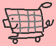

BLACK FRIDAY SALE
Your cart is currently empty.
For today only save 25% on all purchases.
Start Shopping
CERTIFIED FREAKY PRICES
HOME
PRODUCTS
INVENTORY
SICKLY PIG
WHIMSICAL PIG
ROTUND
Whimsical Pig
The pig is a unique and captivating creature, offering both beauty and functionality in any setting. With its sturdy, compact frame, this animal provides a grounding presence, while its smooth, pink-toned skin exudes warmth and softness. The pig's expressive face, complete with large, rounded ears and a distinctive snout, adds character and personality to any environment. Its strong, stocky legs offer both stability and charm, making it a surprisingly versatile companion. Whether lounging in a field or interacting with its surroundings, this delightful creature blends practicality with an endearing, rustic elegance that brings life to any space.